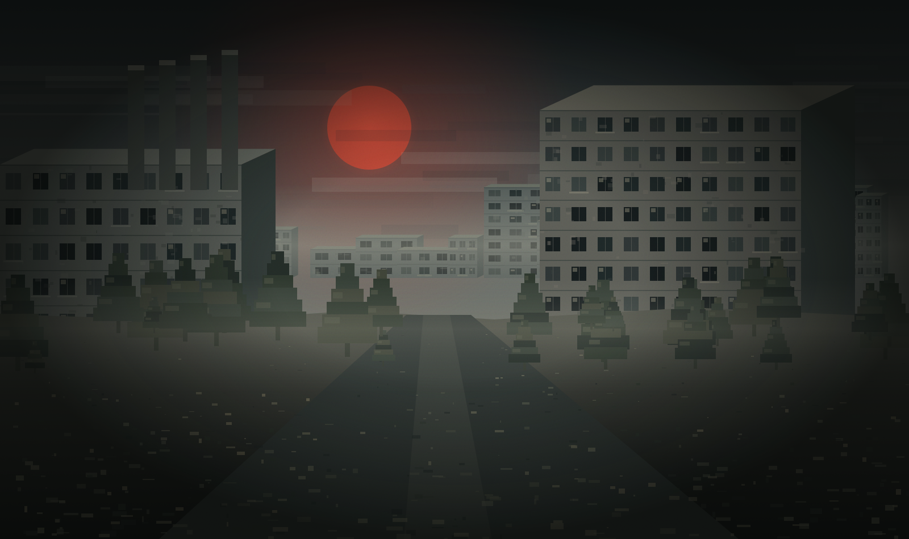

Снаряжение
Собственный инвентарь, отдельные слоты брони и оружия, характеристики экипировки.
Кубическая Зона — мир на основе Minecraft Java Edition, вдохновлённый атмосферой заброшенных постсоветских территорий. Иллюстрации ниже — авторские концепты, не игровые скриншоты.

Собственный инвентарь, отдельные слоты брони и оружия, характеристики экипировки.
Закрепление предмета за персонажем после подтверждения. Механика проходит тестирование.
Особый интерфейс STALBLOCK и модификации на основе Fabric 1.20.1.
Развитие локаций, окружения и игровых систем — направление разработки.